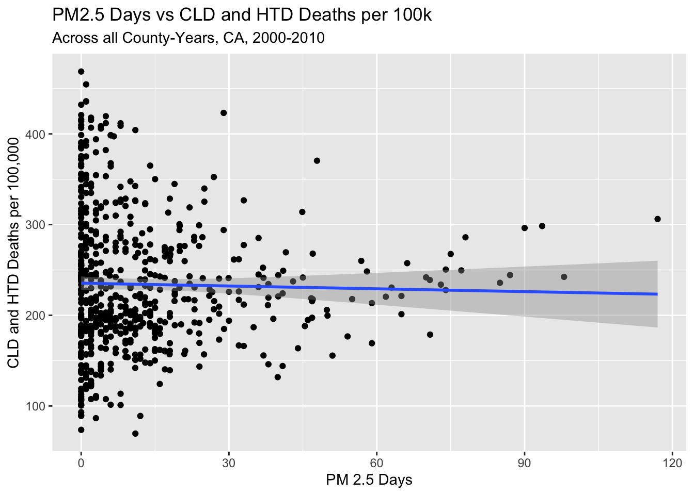
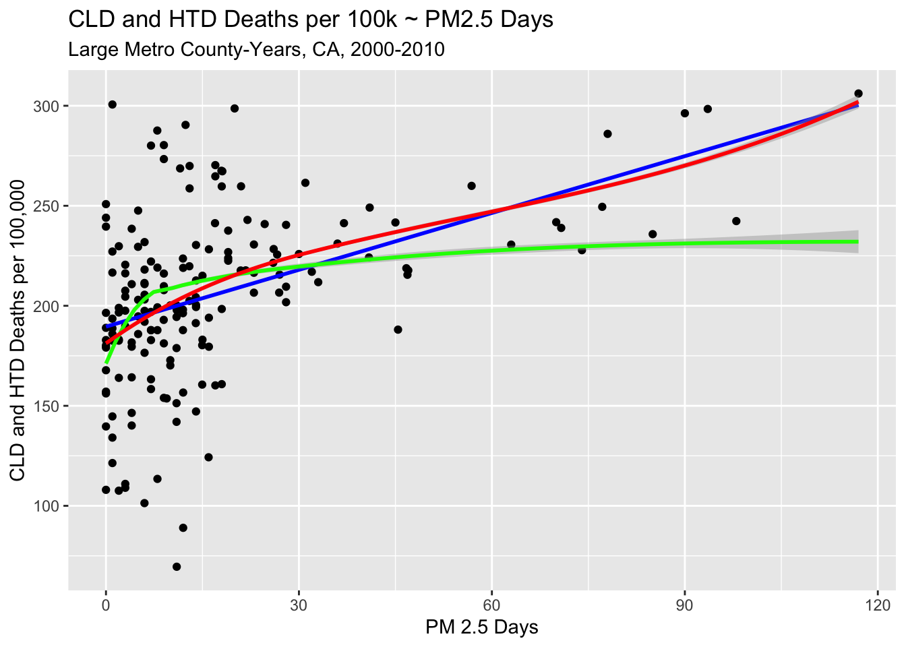

Code
library(tidyverse)
library(dplyr)
library(lubridate)
library(readxl)
library(car)
library(sandwich)
library(stargazer)
knitr::opts_chunk$set(echo = TRUE)Joseph Vincent
August 12, 2023
Poor air quality has been shown to have a massively negative impact on human health. In particular, air pollution is known to worsen pulmonary and cardiovascular diseases.[1] Just this year, researchers out of Boston University showed that air pollution caused by oil and gas production in the US resulted in over 7500 excess deaths and $77 billion in total health impacts in a single year.[2]
The goal of my project is to assess whether there is a noticeable relationship between air quality trends and related causes of death in California for the decade of 2000-2010.
My findings are that, while inconclusive across all counties in California, in large metropolitan counties of California, days where PM2.5 is above the national average have a positive and statistically significant impact on deaths caused by heart and lung diseases.
In order to accomplish this, I’ve had to combine data from a variety of sources and estimate and/or create some variables.
SOURCE [3]
I’m using the CDC’s database for Air Quality Measures on the National Environmental Health Tracking Network. The most recent, complete historic data available contains per-county data on air quality between the years of 1999 and 2013, inclusive.
This data is collected by the Environmental Protection Agency’s network of more than 4,000 outdoor ambient air monitoring systems around the US, called the Air Quality System (AQS).
These systems collect two main types of data:
This refers to tiny particulate matter in the air measuring two and a half microns or less in width that originates from a variety of pollutants. Exposure to PM2.5 particles can cause both short and long term health effects. PM2.5 sources include wildfires and fossil fuel combustion.
High concentrations of Ozone near the ground level can be harmful, causing irritation to the respiratory system and aggravating a variety of chronic lung diseases. This is often referred to as “smog” and is produced by things like car emissions and power plants.
While this data is of high quality, it is lacking in rural areas where monitors are not present. To account for this, the CDC and EPA developed statistical models to fill in gaps in data across regions and time. This allows for granular analysis of county air quality data.
Two important concepts used in my analysis are PM2.5 Days and Ozone Days.
A measure of “PM2.5 Days” for a particular county-year represents the number of days with PM2.5 levels over the NAAQS.
A measure of “Ozone Days” for a particular county-year represents the number of days with the maximum 8-hour average ozone concentration over the National Ambient Air Quality Standard (NAAQS).
SOURCE [4]
In order to draw conclusions about air quality’s immediate impact on public health, I’m combining my air quality data with a data set from the state of California’s Department of Health and Human Services (HHS) on annual number of deaths by county, including primary cause of death. This data also spans the years 1999-2013, but I will be using 2000-2010.
While the data includes a wide variety of causes, for my analysis I will be focusing on chronic lower respiratory disease (CLD), and diseases of the heart (HTD), as these are the main relevant categories for air quality health impacts.
SOURCE [5]
I’m also using per-county population data from the United States Census Bureau. While there are census packages out there for easy use within R, I required annual data by county, which only exists from 2005 onwards in most data sets. I’m instead using the County Intercensal Tables 2000-2010 for the state of California.
SOURCE [6]
I’m using power plant location data from the U.S. Energy Information Administration data in order to calculate density of power plants per county. This will be used as a proxy for social determinants of health and neighborhood quality.
SOURCE [7]
In order to select subsets of my data, I’ve used data from the Economic Research Service of the US Department of Agriculture to obtain Rural Urban Continuum Codes (RUCC) per county. This is a classification scheme on a 8-1 scale that groups counties into categories based on the size of metro areas contained within. This will be used to take subsets of the data in order to make comparisons across similar counties.
See the code chunk below for details about reading, manipulating and combining the data sets:
Rows: 218635 Columns: 14
── Column specification ────────────────────────────────────────────────────────
Delimiter: ","
chr (8): MeasureName, MeasureType, StratificationLevel, StateName, CountyNam...
dbl (6): MeasureId, StateFips, CountyFips, ReportYear, Value, MonitorOnly
ℹ Use `spec()` to retrieve the full column specification for this data.
ℹ Specify the column types or set `show_col_types = FALSE` to quiet this message.#reading in deaths data set
calideaths <- read_csv("Final Project Data/2021-05-14_deaths_final_1999_2013_county_year_sup.csv") %>%
#filtering for occurrence deaths (i.e. all deaths that occurred, disregarding residence)
filter(Geography_Type == "Occurrence") %>%
#de-selecting geography type as they are now all occurrence
select(-Geography_Type)Rows: 292320 Columns: 10
── Column specification ────────────────────────────────────────────────────────
Delimiter: ","
chr (7): County, Geography_Type, Strata, Strata_Name, Cause, Cause_Desc, Ann...
dbl (3): Year, Count, Annotation_Code
ℹ Use `spec()` to retrieve the full column specification for this data.
ℹ Specify the column types or set `show_col_types = FALSE` to quiet this message.Rows: 3194 Columns: 20
── Column specification ────────────────────────────────────────────────────────
Delimiter: ","
chr (2): STNAME, CTYNAME
dbl (18): SUMLEV, REGION, DIVISION, STATE, COUNTY, ESTIMATESBASE2000, POPEST...
ℹ Use `spec()` to retrieve the full column specification for this data.
ℹ Specify the column types or set `show_col_types = FALSE` to quiet this message.#cleaning air quality data
airqualitycali <- airquality %>%
#arranging by year
arrange(`ReportYear`) %>%
#filtering for california only and 2000-2010
filter(StateName == "California" & `ReportYear` %in% c(2000:2010)) %>%
#selecting only relevant columns
select(CountyName, ReportYear, MeasureName, Value) %>%
#renaming county and year to be consistent with deaths data set
rename("County" = `CountyName`, "Year" = `ReportYear`) %>%
#pivoting so that each row is a year-county for merging data
pivot_wider(names_from = MeasureName, values_from = Value) %>%
#renaming Air Quality columns
rename("Ozone Days Delete" = `Number of days with maximum 8-hour average ozone concentration over the National Ambient Air Quality Standard`,
"Ozone Person Days Delete" = `Number of person-days with maximum 8-hour average ozone concentration over the National Ambient Air Quality Standard`,
"PM2.5 Percent of Days Delete" = `Percent of days with PM2.5 levels over the National Ambient Air Quality Standard (NAAQS)`,
"PM2.5 Person Days Delete" = `Person-days with PM2.5 over the National Ambient Air Quality Standard`,
"PM2.5 Annual Average Delete" = `Annual average ambient concentrations of PM2.5 in micrograms per cubic meter (based on seasonal averages and daily measurement)`,
"Ozone Days" = `Number of days with maximum 8-hour average ozone concentration over the National Ambient Air Quality Standard (monitor and modeled data)`,
"Ozone Person Days" = `Number of person-days with maximum 8-hour average ozone concentration over the National Ambient Air Quality Standard (monitor and modeled data)`,
"PM2.5 Percent of Days" = `Percent of days with PM2.5 levels over the National Ambient Air Quality Standard (monitor and modeled data)`,
"PM2.5 Person Days" = `Number of person-days with PM2.5 over the National Ambient Air Quality Standard (monitor and modeled data)`,
"PM2.5 Annual Average" = `Annual average ambient concentrations of PM 2.5 in micrograms per cubic meter, based on seasonal averages and daily measurement (monitor and modeled data)`)
#filling in modeled data for first year, where there is no modeled data
airqualitycali <- airqualitycali %>%
mutate(`Ozone Days` = case_when(
`Year` == 2000 ~ `Ozone Days Delete`,
TRUE ~ as.numeric(as.character(`Ozone Days`)))) %>%
mutate(`Ozone Person Days` = case_when(
`Year` == 2000 ~ `Ozone Person Days Delete`,
TRUE ~ as.numeric(as.character(`Ozone Person Days`)))) %>%
mutate(`PM2.5 Percent of Days` = case_when(
`Year` == 2000 ~ `PM2.5 Percent of Days Delete`,
TRUE ~ as.numeric(as.character(`PM2.5 Percent of Days`)))) %>%
mutate(`PM2.5 Person Days` = case_when(
`Year` == 2000 ~ `PM2.5 Person Days Delete`,
TRUE ~ as.numeric(as.character(`PM2.5 Person Days`)))) %>%
mutate(`PM2.5 Annual Average` = case_when(
`Year` == 2000 ~ `PM2.5 Annual Average Delete`,
TRUE ~ as.numeric(as.character(`PM2.5 Annual Average`)))) %>%
select(!contains("Delete"))
#cleaning deaths data
calideathsclean <- calideaths %>%
#filtering for 2000-2010
filter(`Year` %in% c(2000:2010)) %>%
#filling in suppressed data
mutate(Count = case_when(
Annotation_Code == 1 ~ 0,
TRUE ~ as.numeric(as.character(Count)))) %>%
#de-selecting some unused columns
select(-Cause_Desc, -Annotation_Code, -Annotation_Desc) %>%
#focusing on relevant conditions
filter(Cause %in% c("ALL", "CLD", "HTD")) %>%
rename("Deaths" = `Count`) %>%
rename("Strata Name" = `Strata_Name`)
# cleaning population data
populationstidy <- populations %>%
filter(STNAME == "California" & CTYNAME != "California") %>%
separate(CTYNAME, into = c("County", "Delete"), sep = " County") %>%
select(County, POPESTIMATE2000:POPESTIMATE2010, -CENSUS2010POP) %>%
rename("2000" = POPESTIMATE2000,
"2001" = POPESTIMATE2001,
"2002" = POPESTIMATE2002,
"2003" = POPESTIMATE2003,
"2004" = POPESTIMATE2004,
"2005" = POPESTIMATE2005,
"2006" = POPESTIMATE2006,
"2007" = POPESTIMATE2007,
"2008" = POPESTIMATE2008,
"2009" = POPESTIMATE2009,
"2010" = POPESTIMATE2010) %>%
pivot_longer(col = c(`2000`:`2010`), names_to = "Year", values_to = "Population") %>%
mutate(`Year` = as.numeric(Year))
#merging data
airqualityanddeaths <- left_join(calideathsclean, airqualitycali, by = c("County", "Year"))
airqualityanddeaths <- left_join(airqualityanddeaths, populationstidy, by = c("County", "Year"))
#For the remaining missing air quality data not filled in by models in 2000, replacing NAs with zero, as they are all small rural counties that will skew means higher for 2000
airqualityanddeaths <- airqualityanddeaths %>%
mutate(`Ozone Days` = replace_na(`Ozone Days`, 0),
`Ozone Person Days` = replace_na(`Ozone Person Days`, 0),
`PM2.5 Percent of Days` = replace_na(`PM2.5 Percent of Days`, 0),
`PM2.5 Person Days` = replace_na(`PM2.5 Person Days`, 0),
`PM2.5 Annual Average` = replace_na(`PM2.5 Annual Average`, 0)) %>%
# Creating standardized deaths per 100,000 column
mutate("Deaths per 100,000" = `Deaths`/`Population`*100000) %>%
# Creating a raw PM2.5 Days column
mutate("PM2.5 Days" = `PM2.5 Percent of Days`/100*365) %>%
# Re-arranging
select(Year, County, Population, Strata, `Strata Name`, Cause, Deaths, `Deaths per 100,000`, `Ozone Days`, `Ozone Person Days`, `PM2.5 Days`, `PM2.5 Person Days`, `PM2.5 Percent of Days`, `PM2.5 Annual Average`) %>%
# Turning Year into a date for ease of plotting time series'
mutate(Year = make_date(year=Year)) %>%
# Filtering out Sierra county due to unreliable data
filter(County != "Sierra") %>%
# Filtering out strata for this analysis
filter(Strata == "Total Population") %>%
select(-Strata, -`Strata Name`)
# adding square mile values to each county
airqualityanddeaths <- airqualityanddeaths %>%
mutate(sqmiles = case_when(
County == "San Bernardino" ~ 20057,
County == "Inyo" ~ 10181,
County == "Kern" ~ 8132,
County == "Riverside" ~ 7206,
County == "Siskiyou" ~ 6278,
County == "Fresno" ~ 5958,
County == "Tulare" ~ 4824,
County == "Lassen" ~ 4541,
County == "San Diego" ~ 4207,
County == "Imperial" ~ 4177,
County == "Los Angeles" ~ 4057,
County == "Modoc" ~ 3918,
County == "Shasta" ~ 3775,
County == "Humboldt" ~ 3568,
County == "Mendocino" ~ 3506,
County == "San Luis Obispo" ~ 3299,
County == "Monterey" ~ 3281,
County == "Trinity" ~ 3179,
County == "Mono" ~ 3049,
County == "Tehama" ~ 2950,
County == "Santa Barbara" ~ 2735,
County == "Plumas" ~ 2553,
County == "Tuolumne" ~ 2221,
County == "Madera" ~ 2137,
County == "Merced" ~ 1935,
County == "Ventura" ~ 1843,
County == "El Dorado" ~ 1708,
County == "Butte" ~ 1636,
County == "Sonoma" ~ 1576,
County == "Stanislaus" ~ 1495,
County == "Mariposa" ~ 1449,
County == "Placer" ~ 1407,
County == "San Joaquin" ~ 1391,
County == "Kings" ~ 1389,
County == "San Benito" ~ 1389,
County == "Glenn" ~ 1314,
County == "Santa Clara" ~ 1290,
County == "Lake" ~ 1256,
County == "Colusa" ~ 1151,
County == "Calaveras" ~ 1020,
County == "Yolo" ~ 1015,
County == "Del Norte" ~ 1006,
County == "Sacramento" ~ 965,
County == "Nevada" ~ 958,
County == "Solano" ~ 822,
County == "Orange" ~ 791,
County == "Napa" ~ 748,
County == "Alameda" ~ 739,
County == "Alpine" ~ 738,
County == "Contra Costa" ~ 716,
County == "Yuba" ~ 632,
County == "Sutter" ~ 602,
County == "Amador" ~ 595,
County == "Marin" ~ 520,
County == "San Mateo" ~ 448,
County == "Santa Cruz" ~ 445,
County == "San Francisco" ~ 47
))
airqualityanddeaths <- airqualityanddeaths %>%
mutate(Popdensity = Population/sqmiles)
# source https://www.eia.gov/electricity/data/eia860/
plants <- read_excel("Final Project Data/CA Plants 2010.xlsx")
plantsbycounty <- as.data.frame(table(plants$COUNTY)) %>%
rename("County" = `Var1`, "Plants" = `Freq`)
airqualityanddeaths <- left_join(airqualityanddeaths, plantsbycounty, by = "County")
unemployment <- read_excel("Final Project Data/Incomedata.xlsx")
unemployment <- unemployment %>%
filter(State == "CA" & grepl("CA", Area_Name) & Area_Name != "Sierra, CA") %>%
separate(col = Area_Name, into = c("County", "Delete"), sep = " County") %>%
select(County, contains("Unemployment_rate")) %>%
pivot_longer(cols = 2:24, names_to = "Yeardelete", values_to = "Unemploymentrate") %>%
separate(col = Yeardelete, into = c("Delete", "Year"), sep = "rate_") %>%
mutate(`Year` = as.numeric(Year)) %>%
mutate(Year = make_date(year=Year)) %>%
select(County, Year, Unemploymentrate) %>%
filter(year(Year) %in% 2000:2010)
income <- read_excel("Final Project Data/Incomedata.xlsx")
income <- income %>%
filter(State == "CA" & grepl("CA", Area_Name)) %>%
separate(col = Area_Name, into = c("County", "Delete"), sep = " County") %>%
select(County, Median_Household_Income_2021) %>%
rename(`2021` = `Median_Household_Income_2021`) %>%
#estimating 2000 raw income data based on income growth rates
mutate(`2000raw` = `2021`*.6,
#then calculating inflation adjusted values to normalized year 2010
# inflation adjustment from here: https://www.usinflationcalculator.com/
`2000` = `2000raw` + `2000raw`*0.266,
#then estimating subsequent years based on real income growth rate
# rates from here: https://www.multpl.com/us-median-real-income-growth/table/by-year
`2001` = `2000` + `2000`*-0.022,
`2002` = `2001` + `2001`*-0.013,
`2003` = `2002` + `2002`*-0.001,
`2004` = `2003` + `2003`*-0.004,
`2005` = `2004` + `2004`*0.011,
`2006` = `2005` + `2005`*0.008,
`2007` = `2006` + `2006`*0.013,
`2008` = `2007` + `2007`*-0.037,
`2009` = `2008` + `2008`*-0.007,
`2010` = `2009` + `2009`*-0.026) %>%
select(-`2021`, -`2000raw`) %>%
pivot_longer(cols = c(`2000`:`2010`), values_to = "medianrealincome", names_to = "Year") %>%
mutate(`Year` = as.numeric(Year)) %>%
mutate(Year = make_date(year=Year))
RUCC <- read_excel("Final Project Data/Incomedata.xlsx")
RUCC <- RUCC %>%
filter(State == "CA" & grepl("CA", Area_Name)) %>%
separate(col = Area_Name, into = c("County", "Delete"), sep = " County") %>%
select(County, Rural_Urban_Continuum_Code_2013) %>%
rename(RUCC = `Rural_Urban_Continuum_Code_2013`)
airqualityanddeaths <- left_join(airqualityanddeaths, unemployment, by = c("County", "Year"))
airqualityanddeaths <- left_join(airqualityanddeaths, income, by = c("County", "Year"))
airqualityanddeaths <- left_join(airqualityanddeaths, RUCC, by = "County")
airqualityanddeaths <- airqualityanddeaths %>%
mutate(Plants = if_else(is.na(Plants), 0, Plants))
airqualityanddeaths <- airqualityanddeaths %>%
mutate(Powerplantdensity = Plants/sqmiles*1000)
airqualityanddeaths <- airqualityanddeaths %>%
select(-Deaths) %>%
filter(Cause %in% c("CLD", "HTD")) %>%
pivot_wider(names_from = Cause, values_from = `Deaths per 100,000`) %>%
mutate(Deathsper100kheartlung = HTD + CLD) %>%
filter(!is.na(Deathsper100kheartlung)) %>%
filter(Deathsper100kheartlung > 0)Before creating an optimal model for explaining heart and lung disease deaths, I want to explain why I’ve chosen to take a subset of the data for the final analysis.
My original data set contains 609 observations - inique county-years in California, from 2000-2010 inclusive. This includes all 57 counties (minus Sierra due to missing data).
[1] 609 [1] "Alameda" "Amador" "Butte" "Calaveras"
[5] "Colusa" "Contra Costa" "Del Norte" "El Dorado"
[9] "Fresno" "Glenn" "Humboldt" "Imperial"
[13] "Inyo" "Kern" "Kings" "Lake"
[17] "Lassen" "Los Angeles" "Madera" "Marin"
[21] "Mariposa" "Mendocino" "Merced" "Modoc"
[25] "Mono" "Monterey" "Napa" "Nevada"
[29] "Orange" "Placer" "Plumas" "Riverside"
[33] "Sacramento" "San Benito" "San Bernardino" "San Diego"
[37] "San Francisco" "San Joaquin" "San Luis Obispo" "San Mateo"
[41] "Santa Barbara" "Santa Clara" "Santa Cruz" "Shasta"
[45] "Siskiyou" "Solano" "Sonoma" "Stanislaus"
[49] "Sutter" "Tehama" "Trinity" "Tulare"
[53] "Tuolumne" "Ventura" "Yolo" "Yuba" Performing a basic linear model of Air Quality on Death Rate using this data reveals that there is almost no signal between the two. In fact, there is a slightly negative beta coefficient for PM2.5 Days, and extremely low significance, with a P-value of nearly 60%, and an R squared of 0.0006.
Call:
lm(formula = Deathsper100kheartlung ~ `PM2.5 Days`, data = airqualityanddeaths)
Residuals:
Min 1Q Median 3Q Max
-164.72 -49.89 -11.20 43.48 233.36
Coefficients:
Estimate Std. Error t value Pr(>|t|)
(Intercept) 235.3998 3.7644 62.533 <2e-16 ***
`PM2.5 Days` -0.1033 0.1770 -0.584 0.559
---
Signif. codes: 0 '***' 0.001 '**' 0.01 '*' 0.05 '.' 0.1 ' ' 1
Residual standard error: 75.2 on 607 degrees of freedom
Multiple R-squared: 0.0005614, Adjusted R-squared: -0.001085
F-statistic: 0.341 on 1 and 607 DF, p-value: 0.5595Graphing a scatter plot and the linear model shows a bit more detail about what is going on. As you get down into the counties with low PM2.5 Days (i.e. better air quality), there is an extreme variance in the rate of deaths. As a result, though there does seem to be slight positive visual trend as you get into the county-years with higher PM2.5 Days, the overall trend is inconclusive.
`geom_smooth()` using formula = 'y ~ x'
I believe that this is largely being driven including small rural counties in my model, which is doing two things:
When the population for a county is small, small random changes in absolute deaths cause a large swing in the death rate for that county. There are plenty of instances where deaths by heart or lung disease are in the single or low double digits.
Therefore, I have opted to only perform an analysis on large, metropolitan counties. By doing so, I can focus more on the impact of air quality directly on deaths by lung or heart disease instead of other hidden variables.
I’m conscious that this is not the ideal approach, as it opens the door to sample selection bias; however, it will allow me to draw more meaningful conclusions about the affect of air quality in metropolitan counties until I can measure excess deaths in a more sophisticated manner.
In my analysis, therefore, I can only make claims about large metropolitan counties in California, not US or CA counties in general.
Below, I have used RUCC to filter only for counties with a score of 1, which indicates that metropolitan areas of 1 million in population or more are at least partially within their boundaries.
This still leaves me with more than enough data to draw statistical inferences; 176 observations, including 16 unique counties across the 11 years.
See below for a list of unique counties included.
[1] 176 [1] "Alameda" "Contra Costa" "El Dorado" "Los Angeles"
[5] "Marin" "Orange" "Placer" "Riverside"
[9] "Sacramento" "San Benito" "San Bernardino" "San Diego"
[13] "San Francisco" "San Mateo" "Santa Clara" "Yolo" \[ Heart and Lung Death Rate = \beta_0 + PM2.5Days*\beta_1 + OzoneDays*\beta_2 + PowerPlantDensity*\beta_3 + \epsilon \]
My hypothesis is that air quality, specifically PM2.5 Days per year, will result in a higher rate of deaths by heart and lung causes in large metropolitan counties in California.
While I believe PM2.5 Days will have a larger impact, Ozone Days are also a factor that should be included in my analysis. While these two are strongly correlated, Ozone and PM2.5 may have varying health impacts.
Finally, I would like to try to account for Social Determinants of Health. These are the conditions of a person’s environment and lifestyle that impact their health outcomes. I want to select a measure of social determinants of health that reduced Omitted Variable Bias. To do so, it needs to not only have a potential impact on heart and lung disease deaths, but also be correlated with air quality. Therefore, I have chosen the density of power plants per 1,000 square miles. Power plants are a leading polluter and contributor to poor air quality. Simultaneously, power plants tend to be located in poorer, less affluent neighborhoods. Thus, including power plants will allow me to test for whether what I am actually measuring are social determinants of health’s impacts on rate of death by heart and lung disease.
My composite data set consists of a few different groups of variables. I will explore means and SDs
First are Year and County. Each observation in my data is a unique combination of the two.
Next are the air quality data types. These include PM2.5 Days and Ozone Days, but also some additional ways of measuring PM2.5 or Ozone which I will not explore further in this analysis.
I have calculated death rate totals for CLD and HTD types, and combined those to produce a Death per 100k by Heart and Lung Disease variable.
I’ve included county populations and square miles per county in order to create variables that are normalized. These include my death rates, population density, and power plant density.
Finally, I have a whole set of economic data (Median Income, Unemployment Rate, etc.) that I added to test various variables to determine the best social determinant of health. I will not explore these further here.
Year County Population Ozone Days
Min. :2000-01-01 Length:176 Min. : 53781 Min. : 0.00
1st Qu.:2002-01-01 Class :character 1st Qu.: 252440 1st Qu.: 2.75
Median :2005-01-01 Mode :character Median :1141384 Median : 10.00
Mean :2004-12-31 Mean :1712229 Mean : 31.80
3rd Qu.:2008-01-01 3rd Qu.:1934820 3rd Qu.: 46.25
Max. :2010-01-01 Max. :9830420 Max. :125.00
Ozone Person Days PM2.5 Days PM2.5 Person Days PM2.5 Percent of Days
Min. :0.000e+00 Min. : 0.00 Min. : 0 Min. : 0.000
1st Qu.:5.953e+05 1st Qu.: 4.00 1st Qu.: 1745962 1st Qu.: 1.096
Median :9.023e+06 Median : 10.97 Median : 9124978 Median : 3.005
Mean :9.349e+07 Mean : 16.87 Mean : 47249901 Mean : 4.623
3rd Qu.:6.817e+07 3rd Qu.: 19.00 3rd Qu.: 34198875 3rd Qu.: 5.205
Max. :1.084e+09 Max. :117.00 Max. :818212890 Max. :32.055
PM2.5 Annual Average sqmiles Popdensity Plants
Min. : 0.00 Min. : 47.0 Min. : 38.72 Min. : 0.0
1st Qu.:10.67 1st Qu.: 733.2 1st Qu.: 196.16 1st Qu.: 6.5
Median :11.96 Median : 1152.5 Median : 1006.42 Median : 18.0
Mean :13.46 Mean : 2910.1 Mean : 2026.27 Mean : 30.0
3rd Qu.:14.68 3rd Qu.: 2295.2 3rd Qu.: 1693.30 3rd Qu.: 38.5
Max. :30.34 Max. :20057.0 Max. :17137.51 Max. :103.0
Unemploymentrate medianrealincome RUCC Powerplantdensity
Min. : 2.800 Min. : 52063 Min. :1 Min. : 0.000
1st Qu.: 4.700 1st Qu.: 58359 1st Qu.:1 1st Qu.: 6.062
Median : 5.400 Median : 71932 Median :1 Median : 14.002
Mean : 6.424 Mean : 73156 Mean :1 Mean : 22.923
3rd Qu.: 7.200 3rd Qu.: 83474 3rd Qu.:1 3rd Qu.: 22.466
Max. :15.500 Max. :107226 Max. :1 Max. :148.936
CLD HTD Deathsper100kheartlung
Min. : 0.00 Min. : 69.54 Min. : 69.54
1st Qu.:30.30 1st Qu.:149.67 1st Qu.:182.79
Median :35.05 Median :171.72 Median :206.04
Mean :36.24 Mean :169.31 Mean :205.55
3rd Qu.:41.26 3rd Qu.:194.44 3rd Qu.:230.44
Max. :73.95 Max. :249.26 Max. :306.13 Find the means and standard deviations of my regressors in the table below:
meanandsd <- largemetrocounties %>%
summarise(MeanDeathsper100k = mean(`Deathsper100kheartlung`),
SDDeathsper100k = sd(`Deathsper100kheartlung`),
MeanPM2.5Days = mean(`PM2.5 Days`),
SDPM2.5Days = sd(`PM2.5 Days`),
MeanOzoneDays = mean(`Ozone Days`),
SDOzoneDays = sd(`Ozone Days`),
MeanPowerplantdensity = mean(`Powerplantdensity`),
SDPowerplantdensity = sd(`Powerplantdensity`))
meanandsd# A tibble: 1 × 8
MeanDeathsper100k SDDeathspe…¹ MeanP…² SDPM2…³ MeanO…⁴ SDOzo…⁵ MeanP…⁶ SDPow…⁷
<dbl> <dbl> <dbl> <dbl> <dbl> <dbl> <dbl> <dbl>
1 206. 43.7 16.9 20.8 31.8 38.8 22.9 34.5
# … with abbreviated variable names ¹SDDeathsper100k, ²MeanPM2.5Days,
# ³SDPM2.5Days, ⁴MeanOzoneDays, ⁵SDOzoneDays, ⁶MeanPowerplantdensity,
# ⁷SDPowerplantdensityMy first basic linear model uses only PM2.5 Days as a regressor on Deaths per 100,000.
Seen in the summary below, this is of itself a statistically significant relationship.
The coefficient on PM2.5 Days is .95. Suggesting that for each additional day of PM2.5 levels over the national average, counties will experience an additional .95 deaths per 100,000 for that year.
The p-value is extremely small (e-10).
The adjusted r-squared is just under .2, but this alone is not meaningful until compared with other models.
Call:
lm(formula = Deathsper100kheartlung ~ `PM2.5 Days`, data = largemetrocounties)
Residuals:
Min 1Q Median 3Q Max
-130.443 -17.874 0.427 19.526 110.114
Coefficients:
Estimate Std. Error t value Pr(>|t|)
(Intercept) 189.5654 3.7996 49.891 < 2e-16 ***
`PM2.5 Days` 0.9471 0.1421 6.664 3.37e-10 ***
---
Signif. codes: 0 '***' 0.001 '**' 0.01 '*' 0.05 '.' 0.1 ' ' 1
Residual standard error: 39.1 on 174 degrees of freedom
Multiple R-squared: 0.2033, Adjusted R-squared: 0.1988
F-statistic: 44.41 on 1 and 174 DF, p-value: 3.373e-10I’ve estimated a simple linear-log regression below, to see if changes in PM2.5 Days measured as a percentage yield better results for a uni-variate model.
As you can see below, while still statistically significant, the adjusted R squared value has decreased to .13, suggesting it is a worse fit to my data than the linear model.
Call:
lm(formula = Deathsper100kheartlung ~ log(`PM2.5 Days` + 0.1),
data = largemetrocounties)
Residuals:
Min 1Q Median 3Q Max
-139.714 -17.141 1.317 19.800 114.558
Coefficients:
Estimate Std. Error t value Pr(>|t|)
(Intercept) 185.112 4.974 37.216 < 2e-16 ***
log(`PM2.5 Days` + 0.1) 10.030 1.921 5.222 5.01e-07 ***
---
Signif. codes: 0 '***' 0.001 '**' 0.01 '*' 0.05 '.' 0.1 ' ' 1
Residual standard error: 40.73 on 174 degrees of freedom
Multiple R-squared: 0.1355, Adjusted R-squared: 0.1305
F-statistic: 27.27 on 1 and 174 DF, p-value: 5.012e-07When treating PM2.5 Days as a cubic variable, the adjusted R squared increases, at first suggesting that it may be a better fit.
However, as seen below, the p-values on the coefficients, particularly for the squared and cubed orders have gotten much worse. PM2.5 Days squared has a 0.08 p-value, and PM2.5 Days cubed has a 0.13 p-value. Given that these are several magnitudes worse than for my linear model, this does not give me a lot of confidence that a cubic model is the best fit.
Call:
lm(formula = Deathsper100kheartlung ~ I(`PM2.5 Days`) + I(`PM2.5 Days`^2) +
I(`PM2.5 Days`^3), data = largemetrocounties)
Residuals:
Min 1Q Median 3Q Max
-133.114 -17.442 -0.444 18.445 117.140
Coefficients:
Estimate Std. Error t value Pr(>|t|)
(Intercept) 1.812e+02 5.766e+00 31.432 < 2e-16 ***
I(`PM2.5 Days`) 2.295e+00 7.147e-01 3.211 0.00158 **
I(`PM2.5 Days`^2) -3.379e-02 1.922e-02 -1.758 0.08054 .
I(`PM2.5 Days`^3) 2.025e-04 1.331e-04 1.522 0.12984
---
Signif. codes: 0 '***' 0.001 '**' 0.01 '*' 0.05 '.' 0.1 ' ' 1
Residual standard error: 38.9 on 172 degrees of freedom
Multiple R-squared: 0.2203, Adjusted R-squared: 0.2067
F-statistic: 16.2 on 3 and 172 DF, p-value: 2.554e-09I’ve plotted the three models below along with a scatter plot of PM2.5 Days against Deaths per 100,000.
The linear model is in blue, the log model is in green, and the cubic model is in red.
It’s clear from this plot that there is a large concentration of county-years with lower PM2.5 Days, particularly less than 30. There is a lot of variance in the data at this level and some heteroskedasticity, but this will be addressed further later on when I calculate robust standard errors.
simplemod_predict <- cbind(largemetrocounties, predict(simplemod, interval = 'confidence')) %>%
rename("fitlm" = fit, "lwrlm" = lwr, "uprlm" = upr)
simplelogmod_predict <- cbind(simplemod_predict, predict(simplelogmod, interval = 'confidence')) %>%
rename("fitlog" = fit, "lwrlog" = lwr, "uprlog" = upr)
simplecubicmod_predict <- cbind(simplelogmod_predict, predict(simplecubicmod, interval = 'confidence')) %>%
rename("fitcub" = fit, "lwrcub" = lwr, "uprcub" = upr)
simplecubicmod_predict %>%
ggplot(aes(x = `PM2.5 Days`, y = `Deathsper100kheartlung`)) +
geom_point() +
geom_smooth(aes(x = `PM2.5 Days`, y = fitlm), col = "blue") +
geom_smooth(aes(x = `PM2.5 Days`, y = fitlog), col = "green") +
geom_smooth(aes(x = `PM2.5 Days`, y = fitcub), col = "red") +
labs(title = "CLD and HTD Deaths per 100k ~ PM2.5 Days",
subtitle = "Large Metro County-Years, CA, 2000-2010",
x = "PM 2.5 Days",
y = "CLD and HTD Deaths per 100,000")`geom_smooth()` using method = 'loess' and formula = 'y ~ x'
`geom_smooth()` using method = 'loess' and formula = 'y ~ x'
`geom_smooth()` using method = 'loess' and formula = 'y ~ x'
The log model (green) seems do a pretty good job below 30 days, but is probably the worst visual fit because it plateaus too soon, not accounting for the distinct increase in deaths as the highest PM2.5 Day levels are reached.
When it comes to the linear (blue) and cubic (red) models, they are visually very closely matched. There is perhaps a slight edge to the cubic model, given the small ‘bump’ around 30 days. There is also a ‘dip’ towards the lower end of the data. It’s not clear to me whether this improves the model, due to the distinct spread of death rates at this point.
Overall, I don’t believe that the linear and cubic models are visually distinct enough to eliminate either entirely from contention.
I will still include all models in further analysis to investigate further.
I’ve created 3 models under each of the types previously identified (linear, log, and cubic).
In each, I’ve iteratively added the two additional regressors as previously identified: Ozone Days and Power Plant Density in an attempt to reduce OVB.
simplelog <- lm(data = largemetrocounties, `Deathsper100kheartlung` ~ log(`PM2.5 Days` + .1))
multlog1 <- lm(data = largemetrocounties, `Deathsper100kheartlung` ~ log(`PM2.5 Days` + .1) + `Ozone Days`)
multlog2 <- lm(data = largemetrocounties, `Deathsper100kheartlung` ~ log(`PM2.5 Days` + .1) + `Ozone Days` + `Powerplantdensity`)simplecub <- lm(data = largemetrocounties, `Deathsper100kheartlung` ~ I(`PM2.5 Days`) + I(`PM2.5 Days`^2) + I(`PM2.5 Days`^3))
multcub1 <- lm(data = largemetrocounties, `Deathsper100kheartlung` ~ I(`PM2.5 Days`) + I(`PM2.5 Days`^2) + I(`PM2.5 Days`^3) + `Ozone Days`)
multcub2 <- lm(data = largemetrocounties, `Deathsper100kheartlung` ~ I(`PM2.5 Days`) + I(`PM2.5 Days`^2) + I(`PM2.5 Days`^3) + `Ozone Days` + `Powerplantdensity`)I’ve calculated robust standard errors for each model. Doing so allows me to account for the heteroskedasticity apparent in the data, with their being a higher variance in death rate for county-years with lower PM2.5 Days. This will allow me to compare models while maintaining the OLS assumptions.
rob_se <- list(sqrt(diag(vcovHC(simplelm, type = "HC1"))),
sqrt(diag(vcovHC(multlm1, type = "HC1"))),
sqrt(diag(vcovHC(multlm2, type = "HC1"))),
sqrt(diag(vcovHC(simplelog, type = "HC1"))),
sqrt(diag(vcovHC(multlog1, type = "HC1"))),
sqrt(diag(vcovHC(multlog2, type = "HC1"))),
sqrt(diag(vcovHC(simplecub, type = "HC1"))),
sqrt(diag(vcovHC(multcub1, type = "HC1"))),
sqrt(diag(vcovHC(multcub2, type = "HC1"))))See below for a detailed report of the models. I will discuss these results further in the conclusion section.
suppressWarnings(stargazer(modlist,
title = "Linear Regressions Using CA Air Quality and Deaths by Cause Data",
type = "html",
se = rob_se,
digits = 3,
header = FALSE,
object.names = TRUE,
model.numbers = FALSE,
column.labels = c("simplelm", "multlm1", "multlm2", "simplelog", "multlog1", "multlog2", "simplecub", "multcub1", "multcub2"),
model.names = FALSE))| Dependent variable: | |||||||||
| Deathsper100kheartlung | |||||||||
| simplelm | multlm1 | multlm2 | simplelog | multlog1 | multlog2 | simplecub | multcub1 | multcub2 | |
| modlist | NA | NA | NA | NA | NA | NA | NA | NA | |
PM2.5 Days
|
0.947*** | 0.649*** | 0.592*** | ||||||
| (0.102) | (0.127) | (0.127) | |||||||
Ozone Days
|
0.249*** | 0.339*** | 0.356*** | 0.444*** | 0.252*** | 0.343*** | |||
| (0.068) | (0.072) | (0.072) | (0.076) | (0.071) | (0.075) | ||||
| Powerplantdensity | 0.333*** | 0.332*** | 0.330*** | ||||||
| (0.072) | (0.070) | (0.069) | |||||||
log(PM2.5 Days + 0.1)
|
10.030*** | 5.959*** | 5.044** | ||||||
| (2.026) | (2.131) | (2.158) | |||||||
I(PM2.5 Days)
|
2.295*** | 1.998*** | 1.875*** | ||||||
| (0.641) | (0.650) | (0.641) | |||||||
I(PM2.5 Days2)
|
-0.034** | -0.036** | -0.035** | ||||||
| (0.015) | (0.015) | (0.015) | |||||||
I(PM2.5 Days3)
|
0.0002** | 0.0002*** | 0.0002** | ||||||
| (0.0001) | (0.0001) | (0.0001) | |||||||
| Constant | 189.565*** | 186.675*** | 177.131*** | 185.112*** | 182.099*** | 173.560*** | 181.225*** | 178.656*** | 169.684*** |
| (3.924) | (4.049) | (5.035) | (5.500) | (5.163) | (6.013) | (5.890) | (5.874) | (6.667) | |
| Observations | 176 | 176 | 176 | 176 | 176 | 176 | 176 | 176 | 176 |
| R2 | 0.203 | 0.232 | 0.297 | 0.135 | 0.213 | 0.277 | 0.220 | 0.249 | 0.313 |
| Adjusted R2 | 0.199 | 0.223 | 0.285 | 0.131 | 0.204 | 0.264 | 0.207 | 0.232 | 0.292 |
| Residual Std. Error | 39.099 (df = 174) | 38.493 (df = 173) | 36.941 (df = 172) | 40.730 (df = 174) | 38.969 (df = 173) | 37.468 (df = 172) | 38.905 (df = 172) | 38.285 (df = 171) | 36.741 (df = 170) |
| F Statistic | 44.414*** (df = 1; 174) | 26.170*** (df = 2; 173) | 24.225*** (df = 3; 172) | 27.268*** (df = 1; 174) | 23.433*** (df = 2; 173) | 21.945*** (df = 3; 172) | 16.200*** (df = 3; 172) | 14.198*** (df = 4; 171) | 15.470*** (df = 5; 170) |
| Note: | p<0.1; p<0.05; p<0.01 | ||||||||
Next, I will perform linear hypothesis tests for each model. This ensures that the relationship between air quality and death rate is statistically significant for each model.
As can be seen below, the F-statistic for all of the models are statistically significant, with p-values well below even 0.1.
Linear hypothesis test
Hypothesis:
PM2.5 Days` = 0
Model 1: restricted model
Model 2: Deathsper100kheartlung ~ `PM2.5 Days`
Note: Coefficient covariance matrix supplied.
Res.Df Df F Pr(>F)
1 175
2 174 1 86.165 < 2.2e-16 ***
---
Signif. codes: 0 '***' 0.001 '**' 0.01 '*' 0.05 '.' 0.1 ' ' 1Linear hypothesis test
Hypothesis:
PM2.5 Days` = 0
Ozone Days` = 0
Model 1: restricted model
Model 2: Deathsper100kheartlung ~ `PM2.5 Days` + `Ozone Days`
Note: Coefficient covariance matrix supplied.
Res.Df Df F Pr(>F)
1 175
2 173 2 50.717 < 2.2e-16 ***
---
Signif. codes: 0 '***' 0.001 '**' 0.01 '*' 0.05 '.' 0.1 ' ' 1Linear hypothesis test
Hypothesis:
PM2.5 Days` = 0
Ozone Days` = 0
Powerplantdensity = 0
Model 1: restricted model
Model 2: Deathsper100kheartlung ~ `PM2.5 Days` + `Ozone Days` + Powerplantdensity
Note: Coefficient covariance matrix supplied.
Res.Df Df F Pr(>F)
1 175
2 172 3 35.417 < 2.2e-16 ***
---
Signif. codes: 0 '***' 0.001 '**' 0.01 '*' 0.05 '.' 0.1 ' ' 1Linear hypothesis test
Hypothesis:
log(`PM2.5 Days` + 0.1) = 0
Model 1: restricted model
Model 2: Deathsper100kheartlung ~ log(`PM2.5 Days` + 0.1)
Note: Coefficient covariance matrix supplied.
Res.Df Df F Pr(>F)
1 175
2 174 1 24.502 1.744e-06 ***
---
Signif. codes: 0 '***' 0.001 '**' 0.01 '*' 0.05 '.' 0.1 ' ' 1Linear hypothesis test
Hypothesis:
log(`PM2.5 Days` + 0.1) = 0
Ozone Days` = 0
Model 1: restricted model
Model 2: Deathsper100kheartlung ~ log(`PM2.5 Days` + 0.1) + `Ozone Days`
Note: Coefficient covariance matrix supplied.
Res.Df Df F Pr(>F)
1 175
2 173 2 32.24 1.257e-12 ***
---
Signif. codes: 0 '***' 0.001 '**' 0.01 '*' 0.05 '.' 0.1 ' ' 1Linear hypothesis test
Hypothesis:
log(`PM2.5 Days` + 0.1) = 0
Ozone Days` = 0
Powerplantdensity = 0
Model 1: restricted model
Model 2: Deathsper100kheartlung ~ log(`PM2.5 Days` + 0.1) + `Ozone Days` +
Powerplantdensity
Note: Coefficient covariance matrix supplied.
Res.Df Df F Pr(>F)
1 175
2 172 3 24.01 4.986e-13 ***
---
Signif. codes: 0 '***' 0.001 '**' 0.01 '*' 0.05 '.' 0.1 ' ' 1Linear hypothesis test
Hypothesis:
I(`PM2.5 Days`) = 0
I(`PM2.5 Days`^2) = 0
I(`PM2.5 Days`^3) = 0
Model 1: restricted model
Model 2: Deathsper100kheartlung ~ I(`PM2.5 Days`) + I(`PM2.5 Days`^2) +
I(`PM2.5 Days`^3)
Note: Coefficient covariance matrix supplied.
Res.Df Df F Pr(>F)
1 175
2 172 3 33.367 < 2.2e-16 ***
---
Signif. codes: 0 '***' 0.001 '**' 0.01 '*' 0.05 '.' 0.1 ' ' 1Linear hypothesis test
Hypothesis:
I(`PM2.5 Days`) = 0
I(`PM2.5 Days`^2) = 0
I(`PM2.5 Days`^3) = 0
Ozone Days` = 0
Model 1: restricted model
Model 2: Deathsper100kheartlung ~ I(`PM2.5 Days`) + I(`PM2.5 Days`^2) +
I(`PM2.5 Days`^3) + `Ozone Days`
Note: Coefficient covariance matrix supplied.
Res.Df Df F Pr(>F)
1 175
2 171 4 28.326 < 2.2e-16 ***
---
Signif. codes: 0 '***' 0.001 '**' 0.01 '*' 0.05 '.' 0.1 ' ' 1Linear hypothesis test
Hypothesis:
I(`PM2.5 Days`) = 0
I(`PM2.5 Days`^2) = 0
I(`PM2.5 Days`^3) = 0
Ozone Days` = 0
Powerplantdensity = 0
Model 1: restricted model
Model 2: Deathsper100kheartlung ~ I(`PM2.5 Days`) + I(`PM2.5 Days`^2) +
I(`PM2.5 Days`^3) + `Ozone Days` + Powerplantdensity
Note: Coefficient covariance matrix supplied.
Res.Df Df F Pr(>F)
1 175
2 170 5 24.417 < 2.2e-16 ***
---
Signif. codes: 0 '***' 0.001 '**' 0.01 '*' 0.05 '.' 0.1 ' ' 1I believe that the multiple linear model, including PM2.5 Days, Ozone Days and Power Plant Density best explains the relationship between PM2.5 Days and the rate of deaths caused by heart and lung diseases.
\[ Heart and Lung Death Rate = \beta_0 + PM2.5Days*\beta_1 + OzoneDays*\beta_2 + PowerPlantDensity*\beta_3 + \epsilon \]
As seen from calculating the F-statistics, in each case, we can reject the null hypothesis that there is no relationship between PM2.5 Days and the rate of deaths of heart and lung diseases in large metropolitan counties.
In order to select the optimal model for explaining this relationship, I took a number of steps:
First, I used the visual analysis of simple models to identify that a linear or cubic model were the most likely candidates for explaining the relationship, as discussed in section 1.g.
Next, I began including additional variables in my models to see how they affected model fit and their impact on the Beta1 coefficient. I will use the case of the linear model below as an example:
In the simple linear model, PM2.5 Days had a coefficient of 0.95, with a p-value of well below 0.1%.
After adding Ozone Days as a regressor, the coefficient on PM2.5 Days decreased by around 30% to 0.65. Ozone Days had a coefficient of 0.25. Both remained statistically significant at the 0.1% level.
Finally, when adding Power Plant Density into the regression model, the coefficient on PM2.5 Days decreased by an additional 10% (0.59), with Ozone Days and Power Plant Density both at around 0.33. All of these were statistically significant at the 0.1% level.
Because adding these additional variables reduced the coefficient on PM2.5 Days by considerable margins, and all variables remained statistically significant, it’s safe to assume that adding these variables reduced omitted variable bias, and multi-colinearity was not present. Additionally, the adjusted R squared value increased in each case, suggesting that each subsequent model better fit the data.
Based on adjusted R squared alone, which indicates how well the model fits the data, the cubic model with additional regressors of Ozone Days and Power Plant Density (0.292) is slightly superior to the multivariate linear model (0.285) - but these are very close and do not tell the entire story.
When we look at the significance levels of the individual coefficients for the squared and cubic orders of PM2.5 Days, we see a marked decrease in p-values, both only signficant at the 10% level vs 0.1% level for all variables in the linear model.
Finally, the F-statistic, though significant, is considerably lower in the cubic model (15) than in the linear model (24).
Because of all of these factors, and because the linear model is easier to interpret, I have decided that the multi-linear model best explains this relationship.
In summary, for each additional day of PM2.5 levels over the NAAQS national average, an additional 0.59 deaths per 100,000 of heart and lung causes occur in large metropolitan counties, while holding Ozone Days and Social Determinants of Health constant. To put this into perspective, if Los Angeles county (9.8 million population) were to experience an additional 10 PM2.5 Days in a calendar year, my model estimates they could expect roughly an additional 60 deaths by lung and heart causes.
[1] Kurt, O. K., Zhang, J., & Pinkerton, K. E. (2016). Pulmonary health effects of air pollution. Current opinion in pulmonary medicine, 22(2), 138–143. https://doi.org/10.1097/MCP.0000000000000248
[2] Jonathan J Buonocore et al (2023) Air pollution and health impacts of oil & gas production in the United States Environ. Res.: Health 1 021006. https://iopscience.iop.org/article/10.1088/2752-5309/acc886
[3] Centers for Disease Control and Prevention (2018). Air Quality Measures on the National Environmental Health Tracking Network, 1999 - 2013, [https://data.cdc.gov/Environmental-Health-Toxicology/Air-Quality-Measures-on-the-National-Environmental/cjae-szjv].
[4] California Health and Human Services (2021). 1999-2013 Final Deaths by Year by County,[https://data.chhs.ca.gov/dataset/death-profiles-by-county/resource/e692e6a1-bddd-48ab-a0c8-fa0f1f43e9f4?i %20nner_span=True].
[5] United States Census Bureau (2021). County Intercensal Tables: 2000-2010,[https://www.census.gov/data/tables/time-series/demo/popest/intercensal-2000-2010-counties.html].
[6] U.S. Energy Information Administration (2023). Form EIA-860, [https://www.eia.gov/electricity/data/eia860/]
[7] Economic Research Service of the US Department of Agriculture (2023). [https://www.ers.usda.gov/]
[8] R Core Team (2022). R: A language and environment for statistical computing. R Foundation for Statistical Computing, Vienna, Austria. URL https://www.R-project.org/.
[9] Wickham H, Averick M, Bryan J, Chang W, McGowan LD, François R, Grolemund G, Hayes A, Henry L, Hester J, Kuhn M, Pedersen TL, Miller E, Bache SM, Müller K, Ooms J, Robinson D, Seidel DP, Spinu V, Takahashi K, Vaughan D, Wilke C, Woo K, Yutani H (2019). “Welcome to the tidyverse.” _Journal of Open Source Software_, *4*(43), 1686. doi:10.21105/joss.01686 <https://doi.org/10.21105/joss.01686>.
[10] Fox J, Weisberg S (2019). _An R Companion to Applied Regression_, Third edition. Sage, Thousand Oaks CA. <https://socialsciences.mcmaster.ca/jfox/Books/Companion/>.
[11] Hlavac, Marek (2022). stargazer: Well-Formatted Regression and Summary Statistics Tables. R package version 5.2.3. https://CRAN.R-project.org/package=stargazer
---
title: "Final Project, Air Quality and Lung/Heart Disease Deaths"
author: "Joseph Vincent"
desription: "Air Quality and Deaths"
date: "08/12/2023"
format:
html:
toc: true
code-fold: true
code-copy: true
code-tools: true
categories:
- final project
- Joseph Vincent
editor:
markdown:
wrap: sentence
---
```{r}
#| label: setup
#| warning: false
library(tidyverse)
library(dplyr)
library(lubridate)
library(readxl)
library(car)
library(sandwich)
library(stargazer)
knitr::opts_chunk$set(echo = TRUE)
```
## Introduction
Poor air quality has been shown to have a massively negative impact on human health.
In particular, air pollution is known to worsen pulmonary and cardiovascular diseases.\[1\] Just this year, researchers out of Boston University showed that air pollution caused by oil and gas production in the US resulted in over 7500 excess deaths and \$77 billion in total health impacts in a single year.\[2\]
The goal of my project is to assess whether there is a noticeable relationship between air quality trends and related causes of death in California for the decade of 2000-2010.
**My findings are that, while inconclusive across all counties in California, in large metropolitan counties of California, days where PM2.5 is above the national average have a positive and statistically significant impact on deaths caused by heart and lung diseases.**
## Reading, cleaning and combining data sets
In order to accomplish this, I've had to combine data from a variety of sources and estimate and/or create some variables.
1. **Air quality**
[SOURCE](https://data.cdc.gov/Environmental-Health-Toxicology/Air-Quality-Measures-on-the-National-Environmental/cjae-szjv) \[3\]
I'm using the CDC's database for Air Quality Measures on the National Environmental Health Tracking Network.
The most recent, complete historic data available contains per-county data on air quality between the years of 1999 and 2013, inclusive.
This data is collected by the Environmental Protection Agency's network of more than 4,000 outdoor ambient air monitoring systems around the US, called the Air Quality System (AQS).
These systems collect two main types of data:
- **Fine Particulate Matter (PM2.5) Concentrations**
This refers to tiny particulate matter in the air measuring two and a half microns or less in width that originates from a variety of pollutants.
Exposure to PM2.5 particles can cause both short and long term health effects.
PM2.5 sources include wildfires and fossil fuel combustion.
- **Ozone Concentrations**
High concentrations of Ozone near the ground level can be harmful, causing irritation to the respiratory system and aggravating a variety of chronic lung diseases.
This is often referred to as "smog" and is produced by things like car emissions and power plants.
While this data is of high quality, it is lacking in rural areas where monitors are not present.
To account for this, the CDC and EPA developed statistical models to fill in gaps in data across regions and time.
This allows for granular analysis of county air quality data.
**Two important concepts used in my analysis are PM2.5 Days and Ozone Days.**
*A measure of "PM2.5 Days" for a particular county-year represents the number of days with PM2.5 levels over the NAAQS.*
*A measure of "Ozone Days" for a particular county-year represents the number of days with the maximum 8-hour average ozone concentration over the National Ambient Air Quality Standard (NAAQS).*
2. **Deaths by Cause**
[SOURCE](https://data.chhs.ca.gov/dataset/death-profiles-by-county/resource/e692e6a1-bddd-48ab-a0c8-fa0f1f43e9f4?i%20nner_span=True) \[4\]
In order to draw conclusions about air quality's immediate impact on public health, I'm combining my air quality data with a data set from the state of California's Department of Health and Human Services (HHS) on annual number of deaths by county, including primary cause of death.
This data also spans the years 1999-2013, but I will be using 2000-2010.
While the data includes a wide variety of causes, for my analysis I will be focusing on **chronic lower respiratory disease (CLD), and diseases of the heart (HTD)**, as these are the main relevant categories for air quality health impacts.
3. **Population**
[SOURCE](https://www.census.gov/data/tables/time-series/demo/popest/intercensal-2000-2010-counties.html) \[5\]
I'm also using per-county population data from the United States Census Bureau.
While there are census packages out there for easy use within R, I required annual data by county, which only exists from 2005 onwards in most data sets.
I'm instead using the County Intercensal Tables 2000-2010 for the state of California.
4. **Power Plant Density**
[SOURCE](https://www.eia.gov/electricity/data/eia860/) \[6\]
I'm using power plant location data from the U.S.
Energy Information Administration data in order to calculate density of power plants per county.
This will be used as a proxy for social determinants of health and neighborhood quality.
5. **RUCC**
[SOURCE](https://www.ers.usda.gov/) \[7\]
In order to select subsets of my data, I've used data from the Economic Research Service of the US Department of Agriculture to obtain Rural Urban Continuum Codes (RUCC) per county.
This is a classification scheme on a 8-1 scale that groups counties into categories based on the size of metro areas contained within.
This will be used to take subsets of the data in order to make comparisons across similar counties.
See the code chunk below for details about reading, manipulating and combining the data sets:
```{r}
#reading in air quality data
airquality <- read_csv("Final Project Data/Air_Quality_Measures_on_the_National_Environmental_Health_Tracking_Network.csv")
#reading in deaths data set
calideaths <- read_csv("Final Project Data/2021-05-14_deaths_final_1999_2013_county_year_sup.csv") %>%
#filtering for occurrence deaths (i.e. all deaths that occurred, disregarding residence)
filter(Geography_Type == "Occurrence") %>%
#de-selecting geography type as they are now all occurrence
select(-Geography_Type)
#reading in population data
populations <- read_csv("Final Project Data/co-est00int-tot.csv")
#cleaning air quality data
airqualitycali <- airquality %>%
#arranging by year
arrange(`ReportYear`) %>%
#filtering for california only and 2000-2010
filter(StateName == "California" & `ReportYear` %in% c(2000:2010)) %>%
#selecting only relevant columns
select(CountyName, ReportYear, MeasureName, Value) %>%
#renaming county and year to be consistent with deaths data set
rename("County" = `CountyName`, "Year" = `ReportYear`) %>%
#pivoting so that each row is a year-county for merging data
pivot_wider(names_from = MeasureName, values_from = Value) %>%
#renaming Air Quality columns
rename("Ozone Days Delete" = `Number of days with maximum 8-hour average ozone concentration over the National Ambient Air Quality Standard`,
"Ozone Person Days Delete" = `Number of person-days with maximum 8-hour average ozone concentration over the National Ambient Air Quality Standard`,
"PM2.5 Percent of Days Delete" = `Percent of days with PM2.5 levels over the National Ambient Air Quality Standard (NAAQS)`,
"PM2.5 Person Days Delete" = `Person-days with PM2.5 over the National Ambient Air Quality Standard`,
"PM2.5 Annual Average Delete" = `Annual average ambient concentrations of PM2.5 in micrograms per cubic meter (based on seasonal averages and daily measurement)`,
"Ozone Days" = `Number of days with maximum 8-hour average ozone concentration over the National Ambient Air Quality Standard (monitor and modeled data)`,
"Ozone Person Days" = `Number of person-days with maximum 8-hour average ozone concentration over the National Ambient Air Quality Standard (monitor and modeled data)`,
"PM2.5 Percent of Days" = `Percent of days with PM2.5 levels over the National Ambient Air Quality Standard (monitor and modeled data)`,
"PM2.5 Person Days" = `Number of person-days with PM2.5 over the National Ambient Air Quality Standard (monitor and modeled data)`,
"PM2.5 Annual Average" = `Annual average ambient concentrations of PM 2.5 in micrograms per cubic meter, based on seasonal averages and daily measurement (monitor and modeled data)`)
#filling in modeled data for first year, where there is no modeled data
airqualitycali <- airqualitycali %>%
mutate(`Ozone Days` = case_when(
`Year` == 2000 ~ `Ozone Days Delete`,
TRUE ~ as.numeric(as.character(`Ozone Days`)))) %>%
mutate(`Ozone Person Days` = case_when(
`Year` == 2000 ~ `Ozone Person Days Delete`,
TRUE ~ as.numeric(as.character(`Ozone Person Days`)))) %>%
mutate(`PM2.5 Percent of Days` = case_when(
`Year` == 2000 ~ `PM2.5 Percent of Days Delete`,
TRUE ~ as.numeric(as.character(`PM2.5 Percent of Days`)))) %>%
mutate(`PM2.5 Person Days` = case_when(
`Year` == 2000 ~ `PM2.5 Person Days Delete`,
TRUE ~ as.numeric(as.character(`PM2.5 Person Days`)))) %>%
mutate(`PM2.5 Annual Average` = case_when(
`Year` == 2000 ~ `PM2.5 Annual Average Delete`,
TRUE ~ as.numeric(as.character(`PM2.5 Annual Average`)))) %>%
select(!contains("Delete"))
#cleaning deaths data
calideathsclean <- calideaths %>%
#filtering for 2000-2010
filter(`Year` %in% c(2000:2010)) %>%
#filling in suppressed data
mutate(Count = case_when(
Annotation_Code == 1 ~ 0,
TRUE ~ as.numeric(as.character(Count)))) %>%
#de-selecting some unused columns
select(-Cause_Desc, -Annotation_Code, -Annotation_Desc) %>%
#focusing on relevant conditions
filter(Cause %in% c("ALL", "CLD", "HTD")) %>%
rename("Deaths" = `Count`) %>%
rename("Strata Name" = `Strata_Name`)
# cleaning population data
populationstidy <- populations %>%
filter(STNAME == "California" & CTYNAME != "California") %>%
separate(CTYNAME, into = c("County", "Delete"), sep = " County") %>%
select(County, POPESTIMATE2000:POPESTIMATE2010, -CENSUS2010POP) %>%
rename("2000" = POPESTIMATE2000,
"2001" = POPESTIMATE2001,
"2002" = POPESTIMATE2002,
"2003" = POPESTIMATE2003,
"2004" = POPESTIMATE2004,
"2005" = POPESTIMATE2005,
"2006" = POPESTIMATE2006,
"2007" = POPESTIMATE2007,
"2008" = POPESTIMATE2008,
"2009" = POPESTIMATE2009,
"2010" = POPESTIMATE2010) %>%
pivot_longer(col = c(`2000`:`2010`), names_to = "Year", values_to = "Population") %>%
mutate(`Year` = as.numeric(Year))
#merging data
airqualityanddeaths <- left_join(calideathsclean, airqualitycali, by = c("County", "Year"))
airqualityanddeaths <- left_join(airqualityanddeaths, populationstidy, by = c("County", "Year"))
#For the remaining missing air quality data not filled in by models in 2000, replacing NAs with zero, as they are all small rural counties that will skew means higher for 2000
airqualityanddeaths <- airqualityanddeaths %>%
mutate(`Ozone Days` = replace_na(`Ozone Days`, 0),
`Ozone Person Days` = replace_na(`Ozone Person Days`, 0),
`PM2.5 Percent of Days` = replace_na(`PM2.5 Percent of Days`, 0),
`PM2.5 Person Days` = replace_na(`PM2.5 Person Days`, 0),
`PM2.5 Annual Average` = replace_na(`PM2.5 Annual Average`, 0)) %>%
# Creating standardized deaths per 100,000 column
mutate("Deaths per 100,000" = `Deaths`/`Population`*100000) %>%
# Creating a raw PM2.5 Days column
mutate("PM2.5 Days" = `PM2.5 Percent of Days`/100*365) %>%
# Re-arranging
select(Year, County, Population, Strata, `Strata Name`, Cause, Deaths, `Deaths per 100,000`, `Ozone Days`, `Ozone Person Days`, `PM2.5 Days`, `PM2.5 Person Days`, `PM2.5 Percent of Days`, `PM2.5 Annual Average`) %>%
# Turning Year into a date for ease of plotting time series'
mutate(Year = make_date(year=Year)) %>%
# Filtering out Sierra county due to unreliable data
filter(County != "Sierra") %>%
# Filtering out strata for this analysis
filter(Strata == "Total Population") %>%
select(-Strata, -`Strata Name`)
# adding square mile values to each county
airqualityanddeaths <- airqualityanddeaths %>%
mutate(sqmiles = case_when(
County == "San Bernardino" ~ 20057,
County == "Inyo" ~ 10181,
County == "Kern" ~ 8132,
County == "Riverside" ~ 7206,
County == "Siskiyou" ~ 6278,
County == "Fresno" ~ 5958,
County == "Tulare" ~ 4824,
County == "Lassen" ~ 4541,
County == "San Diego" ~ 4207,
County == "Imperial" ~ 4177,
County == "Los Angeles" ~ 4057,
County == "Modoc" ~ 3918,
County == "Shasta" ~ 3775,
County == "Humboldt" ~ 3568,
County == "Mendocino" ~ 3506,
County == "San Luis Obispo" ~ 3299,
County == "Monterey" ~ 3281,
County == "Trinity" ~ 3179,
County == "Mono" ~ 3049,
County == "Tehama" ~ 2950,
County == "Santa Barbara" ~ 2735,
County == "Plumas" ~ 2553,
County == "Tuolumne" ~ 2221,
County == "Madera" ~ 2137,
County == "Merced" ~ 1935,
County == "Ventura" ~ 1843,
County == "El Dorado" ~ 1708,
County == "Butte" ~ 1636,
County == "Sonoma" ~ 1576,
County == "Stanislaus" ~ 1495,
County == "Mariposa" ~ 1449,
County == "Placer" ~ 1407,
County == "San Joaquin" ~ 1391,
County == "Kings" ~ 1389,
County == "San Benito" ~ 1389,
County == "Glenn" ~ 1314,
County == "Santa Clara" ~ 1290,
County == "Lake" ~ 1256,
County == "Colusa" ~ 1151,
County == "Calaveras" ~ 1020,
County == "Yolo" ~ 1015,
County == "Del Norte" ~ 1006,
County == "Sacramento" ~ 965,
County == "Nevada" ~ 958,
County == "Solano" ~ 822,
County == "Orange" ~ 791,
County == "Napa" ~ 748,
County == "Alameda" ~ 739,
County == "Alpine" ~ 738,
County == "Contra Costa" ~ 716,
County == "Yuba" ~ 632,
County == "Sutter" ~ 602,
County == "Amador" ~ 595,
County == "Marin" ~ 520,
County == "San Mateo" ~ 448,
County == "Santa Cruz" ~ 445,
County == "San Francisco" ~ 47
))
airqualityanddeaths <- airqualityanddeaths %>%
mutate(Popdensity = Population/sqmiles)
# source https://www.eia.gov/electricity/data/eia860/
plants <- read_excel("Final Project Data/CA Plants 2010.xlsx")
plantsbycounty <- as.data.frame(table(plants$COUNTY)) %>%
rename("County" = `Var1`, "Plants" = `Freq`)
airqualityanddeaths <- left_join(airqualityanddeaths, plantsbycounty, by = "County")
unemployment <- read_excel("Final Project Data/Incomedata.xlsx")
unemployment <- unemployment %>%
filter(State == "CA" & grepl("CA", Area_Name) & Area_Name != "Sierra, CA") %>%
separate(col = Area_Name, into = c("County", "Delete"), sep = " County") %>%
select(County, contains("Unemployment_rate")) %>%
pivot_longer(cols = 2:24, names_to = "Yeardelete", values_to = "Unemploymentrate") %>%
separate(col = Yeardelete, into = c("Delete", "Year"), sep = "rate_") %>%
mutate(`Year` = as.numeric(Year)) %>%
mutate(Year = make_date(year=Year)) %>%
select(County, Year, Unemploymentrate) %>%
filter(year(Year) %in% 2000:2010)
income <- read_excel("Final Project Data/Incomedata.xlsx")
income <- income %>%
filter(State == "CA" & grepl("CA", Area_Name)) %>%
separate(col = Area_Name, into = c("County", "Delete"), sep = " County") %>%
select(County, Median_Household_Income_2021) %>%
rename(`2021` = `Median_Household_Income_2021`) %>%
#estimating 2000 raw income data based on income growth rates
mutate(`2000raw` = `2021`*.6,
#then calculating inflation adjusted values to normalized year 2010
# inflation adjustment from here: https://www.usinflationcalculator.com/
`2000` = `2000raw` + `2000raw`*0.266,
#then estimating subsequent years based on real income growth rate
# rates from here: https://www.multpl.com/us-median-real-income-growth/table/by-year
`2001` = `2000` + `2000`*-0.022,
`2002` = `2001` + `2001`*-0.013,
`2003` = `2002` + `2002`*-0.001,
`2004` = `2003` + `2003`*-0.004,
`2005` = `2004` + `2004`*0.011,
`2006` = `2005` + `2005`*0.008,
`2007` = `2006` + `2006`*0.013,
`2008` = `2007` + `2007`*-0.037,
`2009` = `2008` + `2008`*-0.007,
`2010` = `2009` + `2009`*-0.026) %>%
select(-`2021`, -`2000raw`) %>%
pivot_longer(cols = c(`2000`:`2010`), values_to = "medianrealincome", names_to = "Year") %>%
mutate(`Year` = as.numeric(Year)) %>%
mutate(Year = make_date(year=Year))
RUCC <- read_excel("Final Project Data/Incomedata.xlsx")
RUCC <- RUCC %>%
filter(State == "CA" & grepl("CA", Area_Name)) %>%
separate(col = Area_Name, into = c("County", "Delete"), sep = " County") %>%
select(County, Rural_Urban_Continuum_Code_2013) %>%
rename(RUCC = `Rural_Urban_Continuum_Code_2013`)
airqualityanddeaths <- left_join(airqualityanddeaths, unemployment, by = c("County", "Year"))
airqualityanddeaths <- left_join(airqualityanddeaths, income, by = c("County", "Year"))
airqualityanddeaths <- left_join(airqualityanddeaths, RUCC, by = "County")
airqualityanddeaths <- airqualityanddeaths %>%
mutate(Plants = if_else(is.na(Plants), 0, Plants))
airqualityanddeaths <- airqualityanddeaths %>%
mutate(Powerplantdensity = Plants/sqmiles*1000)
airqualityanddeaths <- airqualityanddeaths %>%
select(-Deaths) %>%
filter(Cause %in% c("CLD", "HTD")) %>%
pivot_wider(names_from = Cause, values_from = `Deaths per 100,000`) %>%
mutate(Deathsper100kheartlung = HTD + CLD) %>%
filter(!is.na(Deathsper100kheartlung)) %>%
filter(Deathsper100kheartlung > 0)
```
## The Issue with Small Counties
Before creating an optimal model for explaining heart and lung disease deaths, I want to explain why I've chosen to take a subset of the data for the final analysis.
My original data set contains 609 observations - inique county-years in California, from 2000-2010 inclusive.
This includes all 57 counties (minus Sierra due to missing data).
```{r}
nrow(airqualityanddeaths)
unique(airqualityanddeaths$County)
```
Performing a basic linear model of Air Quality on Death Rate using this data reveals that there is almost no signal between the two.
In fact, there is a slightly negative beta coefficient for PM2.5 Days, and extremely low significance, with a P-value of nearly 60%, and an R squared of 0.0006.
```{r}
summary(lm(data = airqualityanddeaths, `Deathsper100kheartlung` ~ `PM2.5 Days`))
```
Graphing a scatter plot and the linear model shows a bit more detail about what is going on.
As you get down into the counties with low PM2.5 Days (i.e. better air quality), there is an extreme variance in the rate of deaths.
As a result, though there does seem to be slight positive visual trend as you get into the county-years with higher PM2.5 Days, the overall trend is inconclusive.
```{r}
airqualityanddeaths %>%
ggplot(aes(x = `PM2.5 Days`, y = `Deathsper100kheartlung`)) +
geom_point() +
geom_smooth(method = "lm") +
labs(title = "PM2.5 Days vs CLD and HTD Deaths per 100k",
subtitle = "Across all County-Years, CA, 2000-2010",
x = "PM 2.5 Days",
y = "CLD and HTD Deaths per 100,000")
```
I believe that this is largely being driven including small rural counties in my model, which is doing two things:
### 1. The Law of Small Numbers
When the population for a county is small, small random changes in absolute deaths cause a large swing in the death rate for that county.
There are plenty of instances where deaths by heart or lung disease are in the single or low double digits.
### 2. Social Determinants of Health
Smaller counties do not compare well to larger counties on a number of factors, including access to healthcare, income, education status, type of employment, etc.
In similar analyses, researchers have accounted for this by calculating excess deaths.
I am unable to do so with the available data and time constraints for this analysis.
*Attempting to reduce OMB by adding variables related to social determinants of health into the model is not strong enough to correct for these errors.* This was also the case when attempting log or cubic models.
## Selecting a Subset of Large, Metro Counties
Therefore, I have opted to only perform an analysis on large, metropolitan counties.
By doing so, I can focus more on the impact of air quality directly on deaths by lung or heart disease instead of other hidden variables.
I'm conscious that this is not the ideal approach, as it opens the door to sample selection bias; however, it will allow me to draw more meaningful conclusions about the affect of air quality in metropolitan counties until I can measure excess deaths in a more sophisticated manner.
*In my analysis, therefore, I can only make claims about large metropolitan counties in California, not US or CA counties in general.*
Below, I have used RUCC to filter only for counties with a score of 1, which indicates that metropolitan areas of 1 million in population or more are at least partially within their boundaries.
This still leaves me with more than enough data to draw statistical inferences; 176 observations, including 16 unique counties across the 11 years.
See below for a list of unique counties included.
```{r}
largemetrocounties <- airqualityanddeaths %>%
filter(RUCC <= 1)
nrow(largemetrocounties)
unique(largemetrocounties$County)
```
## Analysis
## 1. Identifying My Model
$$
Heart and Lung Death Rate = \beta_0 + PM2.5Days*\beta_1 + OzoneDays*\beta_2 + PowerPlantDensity*\beta_3 + \epsilon
$$
My hypothesis is that air quality, specifically PM2.5 Days per year, will result in a higher rate of deaths by heart and lung causes in large metropolitan counties in California.
While I believe PM2.5 Days will have a larger impact, Ozone Days are also a factor that should be included in my analysis.
While these two are strongly correlated, Ozone and PM2.5 may have varying health impacts.
Finally, I would like to try to account for Social Determinants of Health.
These are the conditions of a person's environment and lifestyle that impact their health outcomes.
I want to select a measure of social determinants of health that reduced Omitted Variable Bias.
To do so, it needs to not only have a potential impact on heart and lung disease deaths, but also be correlated with air quality.
Therefore, I have chosen the *density of power plants* per 1,000 square miles.
Power plants are a leading polluter and contributor to poor air quality.
Simultaneously, power plants tend to be located in poorer, less affluent neighborhoods.
Thus, *including power plants will allow me to test for whether what I am actually measuring are social determinants of health's impacts on rate of death by heart and lung disease.*
## 2. Creating A Model Strategy to Ensure External and Internal Validity
#### a. Summary of Data and b. Custom Variables
My composite data set consists of a few different groups of variables.
I will explore means and SDs
First are Year and County.
Each observation in my data is a unique combination of the two.
Next are the air quality data types.
These include PM2.5 Days and Ozone Days, but also some additional ways of measuring PM2.5 or Ozone which I will not explore further in this analysis.
I have calculated death rate totals for CLD and HTD types, and combined those to produce a Death per 100k by Heart and Lung Disease variable.
I've included county populations and square miles per county in order to create variables that are normalized.
These include my death rates, population density, and power plant density.
Finally, I have a whole set of economic data (Median Income, Unemployment Rate, etc.) that I added to test various variables to determine the best social determinant of health.
I will not explore these further here.
```{r}
summary(largemetrocounties)
```
#### c. Means and Standard Deviations of Regressors
Find the means and standard deviations of my regressors in the table below:
```{r}
meanandsd <- largemetrocounties %>%
summarise(MeanDeathsper100k = mean(`Deathsper100kheartlung`),
SDDeathsper100k = sd(`Deathsper100kheartlung`),
MeanPM2.5Days = mean(`PM2.5 Days`),
SDPM2.5Days = sd(`PM2.5 Days`),
MeanOzoneDays = mean(`Ozone Days`),
SDOzoneDays = sd(`Ozone Days`),
MeanPowerplantdensity = mean(`Powerplantdensity`),
SDPowerplantdensity = sd(`Powerplantdensity`))
meanandsd
```
#### d. Estimating a Simple Linear Model
My first basic linear model uses only PM2.5 Days as a regressor on Deaths per 100,000.
Seen in the summary below, this is of itself a statistically significant relationship.
The coefficient on PM2.5 Days is .95.
Suggesting that for each additional day of PM2.5 levels over the national average, counties will experience an additional .95 deaths per 100,000 for that year.
The p-value is extremely small (e-10).
The adjusted r-squared is just under .2, but this alone is not meaningful until compared with other models.
```{r}
simplemod <- lm(data = largemetrocounties, `Deathsper100kheartlung` ~ `PM2.5 Days`)
summary(simplemod)
```
#### e. Estimating a Simple LinearLog Regression
I've estimated a simple linear-log regression below, to see if changes in PM2.5 Days measured as a percentage yield better results for a uni-variate model.
As you can see below, while still statistically significant, the adjusted R squared value has decreased to .13, suggesting it is a worse fit to my data than the linear model.
```{r}
simplelogmod <- lm(data = largemetrocounties, `Deathsper100kheartlung` ~ log(`PM2.5 Days`+.1))
summary(simplelogmod)
```
#### g. Estimating a Simple Cubic Model
When treating PM2.5 Days as a cubic variable, the adjusted R squared increases, at first suggesting that it may be a better fit.
However, as seen below, the p-values on the coefficients, particularly for the squared and cubed orders have gotten much worse.
PM2.5 Days squared has a 0.08 p-value, and PM2.5 Days cubed has a 0.13 p-value.
Given that these are several magnitudes worse than for my linear model, this does not give me a lot of confidence that a cubic model is the best fit.
```{r}
simplecubicmod <- lm(data = largemetrocounties, `Deathsper100kheartlung` ~ I(`PM2.5 Days`) + I(`PM2.5 Days`^2) + I(`PM2.5 Days`^3))
summary(simplecubicmod)
```
#### h. Plotting Simple Linear, Log and Cubic Models
I've plotted the three models below along with a scatter plot of PM2.5 Days against Deaths per 100,000.
The linear model is in blue, the log model is in green, and the cubic model is in red.
It's clear from this plot that there is a large concentration of county-years with lower PM2.5 Days, particularly less than 30.
There is a lot of variance in the data at this level and some heteroskedasticity, but this will be addressed further later on when I calculate robust standard errors.
```{r}
simplemod_predict <- cbind(largemetrocounties, predict(simplemod, interval = 'confidence')) %>%
rename("fitlm" = fit, "lwrlm" = lwr, "uprlm" = upr)
simplelogmod_predict <- cbind(simplemod_predict, predict(simplelogmod, interval = 'confidence')) %>%
rename("fitlog" = fit, "lwrlog" = lwr, "uprlog" = upr)
simplecubicmod_predict <- cbind(simplelogmod_predict, predict(simplecubicmod, interval = 'confidence')) %>%
rename("fitcub" = fit, "lwrcub" = lwr, "uprcub" = upr)
simplecubicmod_predict %>%
ggplot(aes(x = `PM2.5 Days`, y = `Deathsper100kheartlung`)) +
geom_point() +
geom_smooth(aes(x = `PM2.5 Days`, y = fitlm), col = "blue") +
geom_smooth(aes(x = `PM2.5 Days`, y = fitlog), col = "green") +
geom_smooth(aes(x = `PM2.5 Days`, y = fitcub), col = "red") +
labs(title = "CLD and HTD Deaths per 100k ~ PM2.5 Days",
subtitle = "Large Metro County-Years, CA, 2000-2010",
x = "PM 2.5 Days",
y = "CLD and HTD Deaths per 100,000")
```
## 3. Visual Analysis of Models
The log model (green) seems do a pretty good job below 30 days, but is probably the worst visual fit because it plateaus too soon, not accounting for the distinct increase in deaths as the highest PM2.5 Day levels are reached.
When it comes to the linear (blue) and cubic (red) models, they are visually very closely matched.
There is perhaps a slight edge to the cubic model, given the small 'bump' around 30 days.
There is also a 'dip' towards the lower end of the data.
It's not clear to me whether this improves the model, due to the distinct spread of death rates at this point.
Overall, I don't believe that the linear and cubic models are visually distinct enough to eliminate either entirely from contention.
I will still include all models in further analysis to investigate further.
## 4. Finding the Optimal Model
#### a. Estimating Specifications for Uni-variate and Multivariate of Each Type
I've created 3 models under each of the types previously identified (linear, log, and cubic).
In each, I've iteratively added the two additional regressors as previously identified: Ozone Days and Power Plant Density in an attempt to reduce OVB.
#### Linear models
```{r}
simplelm <- lm(data = largemetrocounties, `Deathsper100kheartlung` ~ `PM2.5 Days`)
multlm1 <- lm(data = largemetrocounties, `Deathsper100kheartlung` ~ `PM2.5 Days` + `Ozone Days`)
multlm2 <- lm(data = largemetrocounties, `Deathsper100kheartlung` ~ `PM2.5 Days` + `Ozone Days` + `Powerplantdensity`)
```
#### Log Models
```{r}
simplelog <- lm(data = largemetrocounties, `Deathsper100kheartlung` ~ log(`PM2.5 Days` + .1))
multlog1 <- lm(data = largemetrocounties, `Deathsper100kheartlung` ~ log(`PM2.5 Days` + .1) + `Ozone Days`)
multlog2 <- lm(data = largemetrocounties, `Deathsper100kheartlung` ~ log(`PM2.5 Days` + .1) + `Ozone Days` + `Powerplantdensity`)
```
#### Cubic Models
```{r}
simplecub <- lm(data = largemetrocounties, `Deathsper100kheartlung` ~ I(`PM2.5 Days`) + I(`PM2.5 Days`^2) + I(`PM2.5 Days`^3))
multcub1 <- lm(data = largemetrocounties, `Deathsper100kheartlung` ~ I(`PM2.5 Days`) + I(`PM2.5 Days`^2) + I(`PM2.5 Days`^3) + `Ozone Days`)
multcub2 <- lm(data = largemetrocounties, `Deathsper100kheartlung` ~ I(`PM2.5 Days`) + I(`PM2.5 Days`^2) + I(`PM2.5 Days`^3) + `Ozone Days` + `Powerplantdensity`)
```
#### Calculating Robust Standard Errors
I've calculated robust standard errors for each model.
Doing so allows me to account for the heteroskedasticity apparent in the data, with their being a higher variance in death rate for county-years with lower PM2.5 Days.
This will allow me to compare models while maintaining the OLS assumptions.
```{r}
rob_se <- list(sqrt(diag(vcovHC(simplelm, type = "HC1"))),
sqrt(diag(vcovHC(multlm1, type = "HC1"))),
sqrt(diag(vcovHC(multlm2, type = "HC1"))),
sqrt(diag(vcovHC(simplelog, type = "HC1"))),
sqrt(diag(vcovHC(multlog1, type = "HC1"))),
sqrt(diag(vcovHC(multlog2, type = "HC1"))),
sqrt(diag(vcovHC(simplecub, type = "HC1"))),
sqrt(diag(vcovHC(multcub1, type = "HC1"))),
sqrt(diag(vcovHC(multcub2, type = "HC1"))))
```
```{r}
modlist <- list(simplelm, multlm1, multlm2, simplelog, multlog1, multlog2, simplecub, multcub1, multcub2)
```
### Reporting in Stargazer
See below for a detailed report of the models.
I will discuss these results further in the conclusion section.
```{r my latextable, results = "asis"}
suppressWarnings(stargazer(modlist,
title = "Linear Regressions Using CA Air Quality and Deaths by Cause Data",
type = "html",
se = rob_se,
digits = 3,
header = FALSE,
object.names = TRUE,
model.numbers = FALSE,
column.labels = c("simplelm", "multlm1", "multlm2", "simplelog", "multlog1", "multlog2", "simplecub", "multcub1", "multcub2"),
model.names = FALSE))
```
#### d. Linear Hypothesis Tests
Next, I will perform linear hypothesis tests for each model.
This ensures that the relationship between air quality and death rate is statistically significant for each model.
As can be seen below, the F-statistic for all of the models are statistically significant, with p-values well below even 0.1.
#### Simple Linear Model
```{r}
linearHypothesis(simplelm,
"`PM2.5 Days` = 0",
vcov. = vcovHC(simplelm, type = "HC1"))
```
#### Multiple Linear Model 1
```{r}
linearHypothesis(multlm1,
c("`PM2.5 Days` = 0", "`Ozone Days` = 0"),
vcov. = vcovHC(multlm1, type = "HC1"))
```
#### Multiple Linear Model 2
```{r}
linearHypothesis(multlm2,
c("`PM2.5 Days` = 0", "`Ozone Days` = 0", "Powerplantdensity = 0"),
vcov. = vcovHC(multlm2, type = "HC1"))
```
#### Simple Log Model
```{r}
linearHypothesis(simplelog,
"log(`PM2.5 Days` + 0.1) = 0",
vcov. = vcovHC(simplelog, type = "HC1"))
```
#### Multiple Log Model 1
```{r}
linearHypothesis(multlog1,
c("log(`PM2.5 Days` + 0.1) = 0", "`Ozone Days` = 0"),
vcov. = vcovHC(multlog1, type = "HC1"))
```
#### Multiple Log Model 2
```{r}
linearHypothesis(multlog2,
c("log(`PM2.5 Days` + 0.1) = 0", "`Ozone Days` = 0", "Powerplantdensity = 0"),
vcov. = vcovHC(multlog2, type = "HC1"))
```
#### Simple Cubic Model
```{r}
linearHypothesis(simplecub,
c("I(`PM2.5 Days`) = 0", "I(`PM2.5 Days`^2) = 0", "I(`PM2.5 Days`^3) = 0"),
vcov. = vcovHC(simplecub, type = "HC1"))
```
#### Multiple Cubic Model 1
```{r}
linearHypothesis(multcub1,
c("I(`PM2.5 Days`) = 0", "I(`PM2.5 Days`^2) = 0", "I(`PM2.5 Days`^3) = 0", "`Ozone Days` = 0"),
vcov. = vcovHC(multcub1, type = "HC1"))
```
#### Multiple Cubic Model 2
```{r}
linearHypothesis(multcub2,
c("I(`PM2.5 Days`) = 0", "I(`PM2.5 Days`^2) = 0", "I(`PM2.5 Days`^3) = 0", "`Ozone Days` = 0", "Powerplantdensity = 0"),
vcov. = vcovHC(multcub2, type = "HC1"))
```
## 5. Selecting the Optimal Model
I believe that the multiple linear model, including PM2.5 Days, Ozone Days and Power Plant Density best explains the relationship between PM2.5 Days and the rate of deaths caused by heart and lung diseases.
$$
Heart and Lung Death Rate = \beta_0 + PM2.5Days*\beta_1 + OzoneDays*\beta_2 + PowerPlantDensity*\beta_3 + \epsilon
$$
**As seen from calculating the F-statistics, in each case, we can reject the null hypothesis that there is no relationship between PM2.5 Days and the rate of deaths of heart and lung diseases in large metropolitan counties.**
In order to select the optimal model for explaining this relationship, I took a number of steps:
First, I used the **visual analysis** of simple models to identify that a **linear or cubic model** were the most likely candidates for explaining the relationship, as discussed in section 1.g.
#### The Multivariate Model Reduces OVB
Next, I began including additional variables in my models to see how they affected model fit and their impact on the Beta1 coefficient.
I will use the case of the linear model below as an example:
- In the simple linear model, PM2.5 Days had a coefficient of 0.95, with a p-value of well below 0.1%.
- After adding Ozone Days as a regressor, the coefficient on PM2.5 Days decreased by around 30% to 0.65.
Ozone Days had a coefficient of 0.25.
Both remained statistically significant at the 0.1% level.
- Finally, when adding Power Plant Density into the regression model, the coefficient on PM2.5 Days decreased by an additional 10% (0.59), with Ozone Days and Power Plant Density both at around 0.33.
All of these were statistically significant at the 0.1% level.
**Because adding these additional variables reduced the coefficient on PM2.5 Days by considerable margins, and all variables remained statistically significant, it's safe to assume that adding these variables reduced omitted variable bias, and multi-colinearity was not present. Additionally, the adjusted R squared value increased in each case, suggesting that each subsequent model better fit the data.**
#### The Multi-Linear Model is Extremely Significant and Easy to Interpret
Based on adjusted R squared alone, which indicates how well the model fits the data, the cubic model with additional regressors of Ozone Days and Power Plant Density (0.292) is slightly superior to the multivariate linear model (0.285) - but these are very close and do not tell the entire story.
When we look at the significance levels of the individual coefficients for the squared and cubic orders of PM2.5 Days, we see a marked decrease in p-values, both only signficant at the 10% level vs 0.1% level for all variables in the linear model.
Finally, the F-statistic, though significant, is considerably lower in the cubic model (15) than in the linear model (24).
Because of all of these factors, and because the linear model is easier to interpret, I have decided that the multi-linear model best explains this relationship.
**In summary, for each additional day of PM2.5 levels over the NAAQS national average, an additional 0.59 deaths per 100,000 of heart and lung causes occur in large metropolitan counties, while holding Ozone Days and Social Determinants of Health constant. To put this into perspective, if Los Angeles county (9.8 million population) were to experience an additional 10 PM2.5 Days in a calendar year, my model estimates they could expect roughly an additional 60 deaths by lung and heart causes.**
### **Bibliography**
\[1\] Kurt, O. K., Zhang, J., & Pinkerton, K. E.
(2016).
Pulmonary health effects of air pollution.
*Current opinion in pulmonary medicine*, *22*(2), 138--143.
https://doi.org/10.1097/MCP.0000000000000248
\[2\] Jonathan J Buonocore *et al* (2023) Air pollution and health impacts of oil & gas production in the United States *Environ. Res.: Health* **1** 021006.
https://iopscience.iop.org/article/10.1088/2752-5309/acc886
\[3\] Centers for Disease Control and Prevention (2018).
*Air Quality Measures on the National Environmental Health Tracking Network, 1999 - 2013,* \[https://data.cdc.gov/Environmental-Health-Toxicology/Air-Quality-Measures-on-the-National-Environmental/cjae-szjv\].
\[4\] California Health and Human Services (2021).
*1999-2013 Final Deaths by Year by County*,\[https://data.chhs.ca.gov/dataset/death-profiles-by-county/resource/e692e6a1-bddd-48ab-a0c8-fa0f1f43e9f4?i
%20nner_span=True\].
\[5\] United States Census Bureau (2021).
*County Intercensal Tables: 2000-2010*,\[https://www.census.gov/data/tables/time-series/demo/popest/intercensal-2000-2010-counties.html\].
\[6\] U.S.
Energy Information Administration (2023).
*Form EIA-860*, \[https://www.eia.gov/electricity/data/eia860/\]
\[7\] Economic Research Service of the US Department of Agriculture (2023).
\[https://www.ers.usda.gov/\]
\[8\] R Core Team (2022).
R: A language and environment for statistical computing.
R Foundation for Statistical Computing, Vienna, Austria.
URL https://www.R-project.org/.
\[9\] Wickham H, Averick M, Bryan J, Chang W, McGowan LD, François R, Grolemund G, Hayes A, Henry L, Hester J, Kuhn M, Pedersen TL, Miller E, Bache SM, Müller K, Ooms J, Robinson D, Seidel DP, Spinu V, Takahashi K, Vaughan D, Wilke C, Woo K, Yutani H (2019).
"Welcome to the tidyverse." \_Journal of Open Source Software\_, \*4\*(43), 1686.
doi:10.21105/joss.01686 \<https://doi.org/10.21105/joss.01686\>.
\[10\] Fox J, Weisberg S (2019).
\_An R Companion to Applied Regression\_, Third edition.
Sage, Thousand Oaks CA.
\<https://socialsciences.mcmaster.ca/jfox/Books/Companion/\>.
\[11\] Hlavac, Marek (2022).
stargazer: Well-Formatted Regression and Summary Statistics Tables.
R package version 5.2.3.
https://CRAN.R-project.org/package=stargazer
2. Social Determinants of Health
Smaller counties do not compare well to larger counties on a number of factors, including access to healthcare, income, education status, type of employment, etc.
In similar analyses, researchers have accounted for this by calculating excess deaths. I am unable to do so with the available data and time constraints for this analysis.
Attempting to reduce OMB by adding variables related to social determinants of health into the model is not strong enough to correct for these errors. This was also the case when attempting log or cubic models.